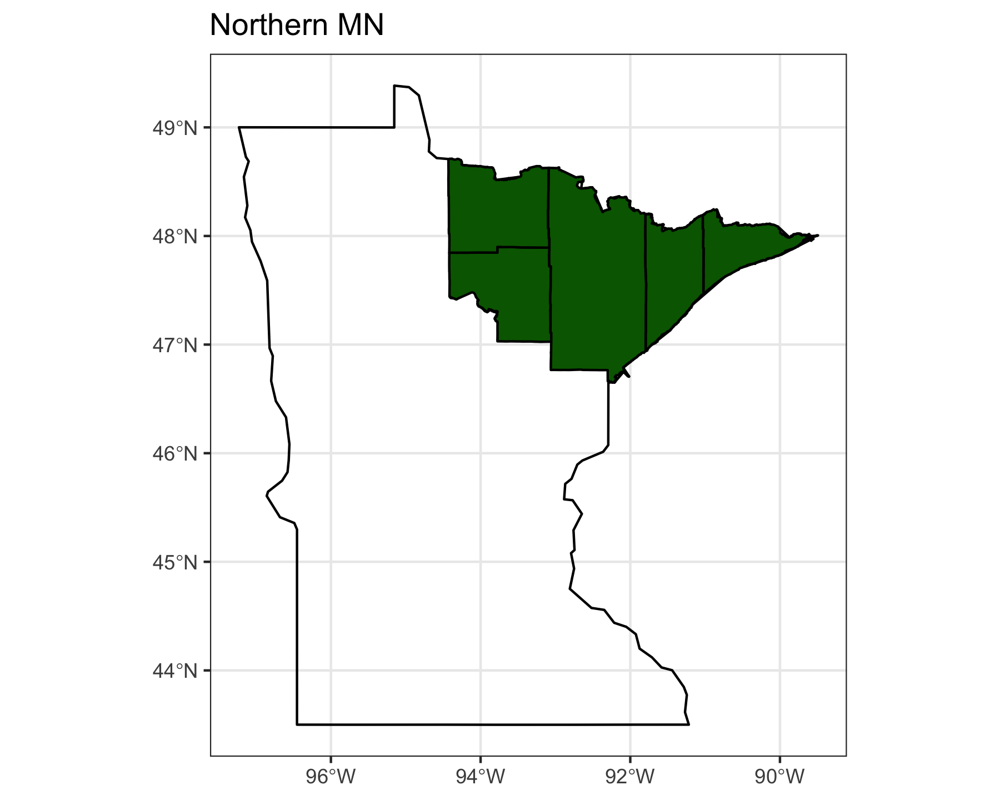
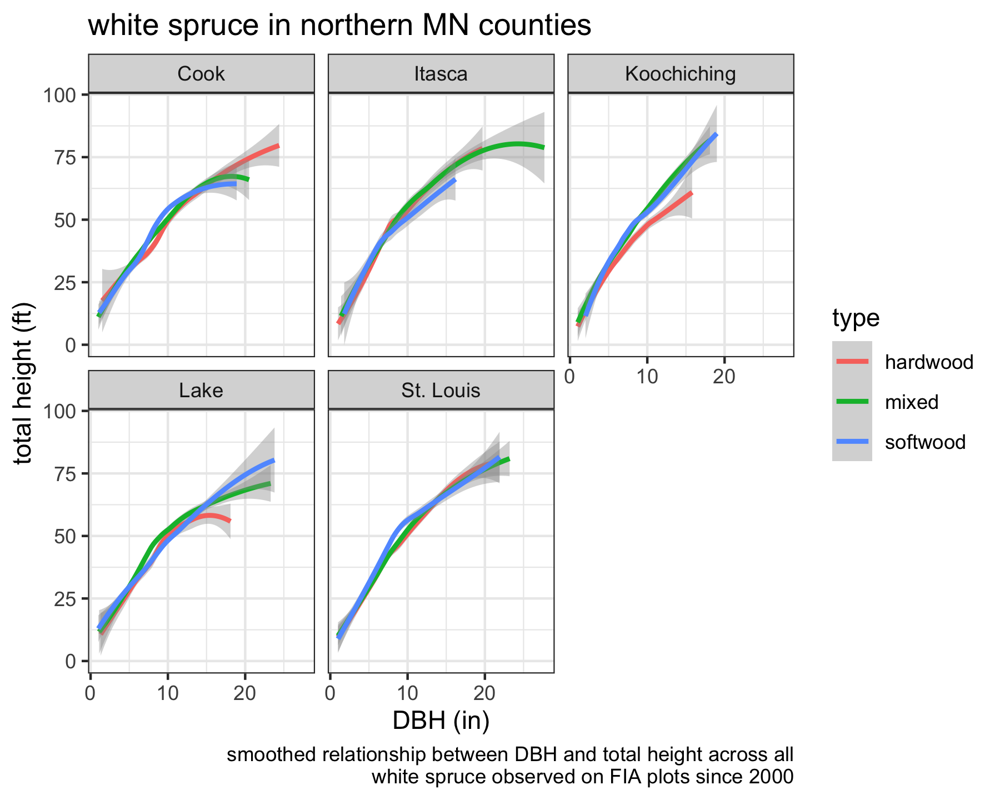
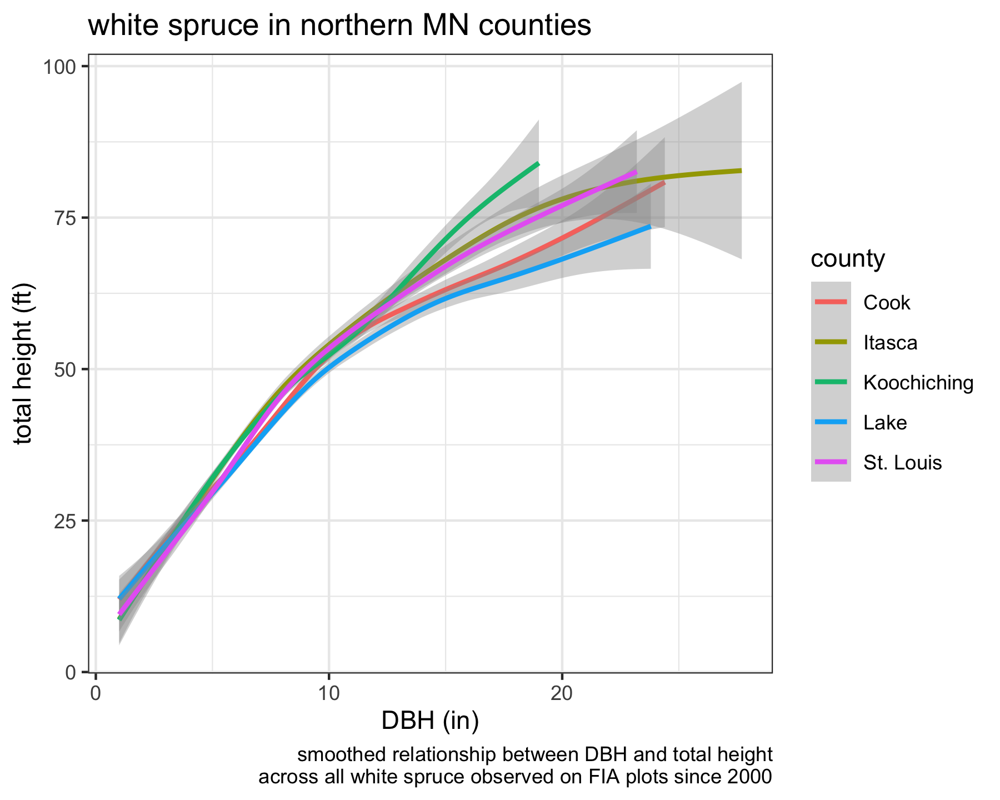

library(dplyr) library(ggplot2) library(sf) library(tidyr) library(tidyFIA) ggplot2::theme_set(theme_bw())
White spruce is a commercially and ecologically important species in northern Minnesota so I am interested in understanding more about the way it tends to grow across the region.
FIA data is useful for this type of quest so I am going to use tidy_fia to download and import the data so I can spend my time on the part of the process that I care about: learning about white spruce!
There is a shapefile for just about everything on the internet, including one for all counties in Minnesota. I googled “minnesota counties shapefile” and found the one I want on one of the first links (hint: if you see a download link button you can right-click and copy the web address where the file is stored). I can use R to download and read the zipped shapefile, then filter the file down to the counties where I want to know more about white spruce
counties_url <- "ftp://ftp.gisdata.mn.gov/pub/gdrs/data/pub/us_mn_state_dnr/bdry_counties_in_minnesota/shp_bdry_counties_in_minnesota.zip" counties_zip <- file.path( tempdir(), "shp_bdry_counties_in_minnesota.zip" ) download.file( url = counties_url, destfile = counties_zip ) unzip( zipfile = counties_zip, exdir = tempdir() ) county_shp <- file.path(tempdir(), "mn_county_boundaries.shp") counties <- st_read(county_shp) %>% st_transform(4326)
Reading layer `mn_county_boundaries' from data source `/private/var/folders/zn/hp8t93v97tl0klvbxfqvw3p80000gn/T/RtmpnxQto1/mn_county_boundaries.shp' using driver `ESRI Shapefile'
Simple feature collection with 117 features and 10 fields
geometry type: POLYGON
dimension: XY
bbox: xmin: 189775.3 ymin: 4816305 xmax: 761655.1 ymax: 5472428
CRS: 26915county_names <- c( "Cook", "Lake", "St. Louis", "Koochiching", "Itasca" ) northern_counties <- counties %>% filter(CTY_NAME %in% county_names) %>% group_by(CTY_NAME, CTY_FIPS) %>% summarize() %>% ungroup()
Here is a map for some context:
mn <- spData::us_states %>% filter(NAME == "Minnesota") ggplot() + geom_sf( data = mn, color = "black", alpha = 0 ) + geom_sf( data = northern_counties, color = "black", fill = "darkgreen" ) + labs( title = "Northern MN" )

Now I will collect the FIA “plot” and “tree” tables for Minnesota using the function tidy_fia.
aoi <- northern_counties %>% summarize() fia_data <- tidy_fia( aoi = aoi, table_names = c("plot", "tree"), postgis = TRUE )
Since the tree table does not have common names for the trees I am importing the REF_SPECIES table from FIADB using the function read_ref_table.
ref_species <- read_ref_table("REF_SPECIES") %>% select(spcd, common_name, sftwd_hrdwd)
The tree table has codes for state and county but the readable names are stored in a separate table (“COUNTY”) which is stored at the state-level but is also available for the entire US.
ref_county <- read_ref_table("COUNTY") %>% select(statecd, countycd, county = countynm)
Perhaps white spruce shows differences in height and diameter relationships with respect to the type of forest community it inhabits. I am going to designate each plot as ‘hardwood’, ‘mixed’, or ‘softwood’ using plot basal area in hardwood/softwood trees in the tree table.
plot_stats <- fia_data[["tree"]] %>% left_join(ref_species) %>% group_by(plt_cn, sftwd_hrdwd) %>% summarize( bapa = sum(tpa_unadj * 0.005454 * dia ^ 2, na.rm = TRUE) ) %>% ungroup() %>% pivot_wider( names_from = "sftwd_hrdwd", values_from = "bapa" ) %>% replace_na( replace = list(H = 0, S = 0) ) %>% mutate( total = H + S, type = case_when( H / (H + S) > 0.7 ~ "hardwood", H / (H + S) >= 0.3 ~ "mixed", H / (H + S) < 0.3 ~ "softwood" ) )
Now I can filter the TREE table down to just live (statuscd == 1) white spruce.
white_spruce <- fia_data[["tree"]] %>% left_join(ref_species, by = "spcd") %>% filter( common_name == "white spruce", statuscd == 1, !is.na(dia), !is.na(ht) ) %>% left_join(plot_stats, by = "plt_cn") %>% left_join(ref_county, by = c("statecd", "countycd"))
To get a sense for height/diameter relationships in white spruce I will make a graph that shows the trend by forest type and county.
white_spruce %>% ggplot(aes(x = dia, y = ht, color = type)) + facet_wrap(~ county) + geom_smooth() + labs( x = "DBH (in)", y = "total height (ft)", title = "white spruce in northern MN counties", caption = "smoothed relationship between DBH and total height across all\nwhite spruce observed on FIA plots since 2000" )

That graph is somewhat hard to read and does not show any obvious differences in height:diameter relationships so I will try one graph with a separate line for each county.
white_spruce %>% ggplot(aes(x = dia, y = ht, color = county)) + geom_smooth() + labs( x = "DBH (in)", y = "total height (ft)", title = "white spruce in northern MN counties", caption = "smoothed relationship between DBH and total height\nacross all white spruce observed on FIA plots since 2000" )
